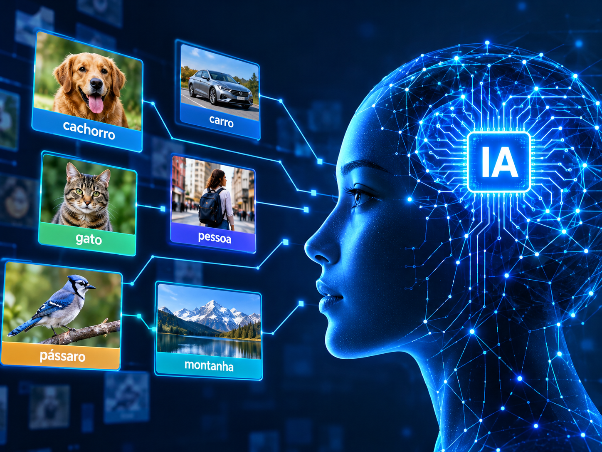

ImageNet
Uma grande base de imagens organizada por categorias, que se tornou importante para treinar e avaliar sistemas de reconhecimento visual. O projeto contribuiu para avanços na inteligência artificial e no aprendizado de máquina.
MULHERES NA TECNOLOGIA
Fei-Fei Li é uma cientista da computação reconhecida por suas contribuições à inteligência artificial e à visão computacional. Suas pesquisas ajudaram a avançar o desenvolvimento de sistemas capazes de reconhecer e interpretar imagens.
Conheça sua históriaSUA HISTÓRIA

Fei-Fei Li é uma cientista da computação reconhecida mundialmente por suas contribuições para o desenvolvimento da inteligência artificial (IA), principalmente nas áreas de visão computacional e reconhecimento de imagens. Ela nasceu em Pequim, na China, e ainda jovem mudou-se para os Estados Unidos, onde construiu sua trajetória acadêmica e profissional.
Ao longo de sua carreira, Fei-Fei Li dedicou-se a pesquisas que ajudam os computadores a identificar, analisar e compreender imagens, aproximando a tecnologia da capacidade humana de interpretar o mundo visual. Seu trabalho contribuiu para avanços importantes no aprendizado de máquina e no reconhecimento visual.
Um de seus trabalhos mais conhecidos está relacionado ao ImageNet, uma grande base de dados de imagens organizada por categorias. Esse projeto contribuiu para o desenvolvimento e a avaliação de sistemas capazes de reconhecer objetos e informações visuais.
Além de sua atuação científica, Fei-Fei Li também se destaca por defender uma inteligência artificial centrada no ser humano. Ela valoriza o desenvolvimento responsável da tecnologia, considerando questões éticas e os impactos que a inteligência artificial pode ter na sociedade.
Sua trajetória é uma inspiração para estudantes e profissionais, especialmente para mulheres que desejam seguir carreira nas áreas de ciência, tecnologia, engenharia e matemática. Fei-Fei Li demonstra como a educação, a pesquisa e a diversidade podem contribuir para construir um futuro tecnológico mais inovador e responsável.
INOVAÇÃO E PESQUISA
Conheça iniciativas importantes relacionadas à trajetória de Fei-Fei Li.
Uma grande base de imagens organizada por categorias, que se tornou importante para treinar e avaliar sistemas de reconhecimento visual. O projeto contribuiu para avanços na inteligência artificial e no aprendizado de máquina.
Iniciativa voltada a ampliar o acesso à educação em inteligência artificial. Busca incentivar a participação de pessoas de diferentes origens e tornar a área mais inclusiva e diversa.

Área da inteligência artificial que permite aos computadores analisar imagens e reconhecer objetos, pessoas e cenas. As pesquisas nessa área ajudam as máquinas a interpretar informações visuais.
IDEIAS QUE INSPIRAM
A inteligência artificial deve ser desenvolvida pensando nas pessoas e na sociedade.
Ideia que resume sua abordagem humanizada da IA. Não é uma citação literal.Fei-Fei Li defende uma inteligência artificial centrada no ser humano, desenvolvida com responsabilidade e atenção aos seus impactos na sociedade.
Seu trabalho ajudou a ampliar as possibilidades da visão computacional e do reconhecimento de imagens, contribuindo para o avanço das pesquisas em inteligência artificial.
Seu legado também está relacionado ao incentivo à educação, à diversidade e à participação das mulheres na tecnologia. Sua história mostra que a ciência pode ser usada para criar soluções inovadoras sem deixar de considerar as pessoas.